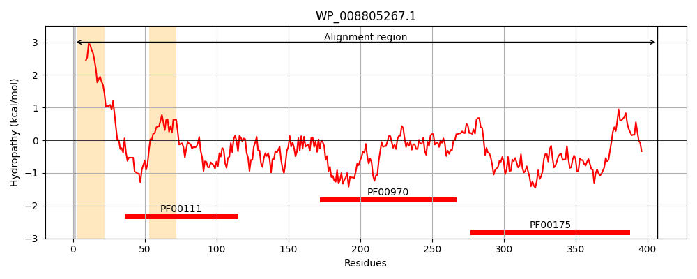
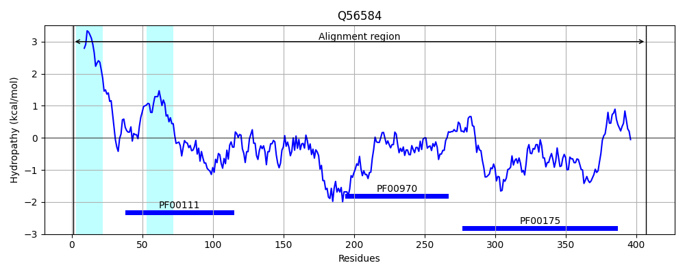
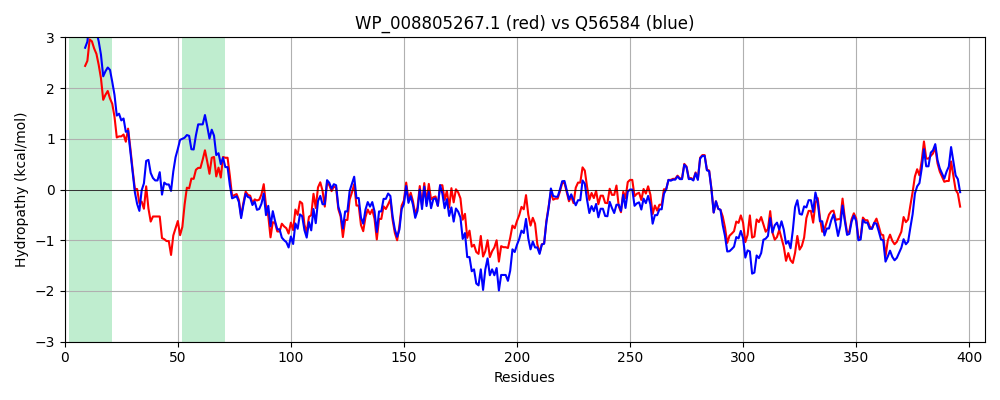

Hit Accession: Q56584
Hit TCID: 3.D.5.1.1
Hit Description: gnl|BL_ORD_ID|14139 gnl|TC-DB|Q56584|3.D.5.1.1 Na(+)-translocating NADH-quinone reductase subunit F (EC 1.6.5.-) (Na(+)-translocating NADH-quinone reductase subunit beta) (Na(+)- translocating NQR subunit F) (Na(+)-NQR subunit F) (NQR complex subunit F) (NQR-1 subunit F) - Vibrio
Mach Len: 407
e:0.000000
Query TMS Count : 2
Hit TMS Count: 2
TMS-Overlap Score: 2.000000
Predicted Substrates:CHEBI:9175;sodium(1+)
BLAST Alignment:
Score: 1728 , Bit scores: 670 bits, E-value: 0.0e+00, Alignment length: 407, Percentage identity: 79
Query: 1 MEIILGVVMFTLIVLVLSGLILAARSKLVNAGDVVIEINNEADKQIRTPAGDKLLNTLSSNGIFVSSACGGGGSCGQCRVTIKEGGGDILPTELSHITKREAKEGCRLACQVAVKQNMKIELPEEIFGVKKWECEVISNDNKATFIKELKLRVPDGEAVPFRAGGYIQIECPSHKVAYADFDIPDEYRSDWDKFNLFRYVSEVKEPTLRAYSMANYPEEKGIIMLNVRIATPPPKVPDAPPGIMSSYIWSLKPGDKVTISGPFGEFFAKETDAEMVFIGGGAGMAPMRSHIFDQLKRLHSTRKISFWYGARSLREMFYDDEFEQLARDNPNFTFHVALSDPLPEDNWTGHTGFIHNVLYENYLRDHPAPEDCEFYMCGPPVMNAAVIKMLKDLGVEDENIMLDDFGG 407
M+IILGVVMFTLIVL L +IL A+SKLV GD+ I +N++ I T G KLL+ L+ G+FVSSACGGGGSCGQCRV +K GGGDILPTEL HITK EA+EG RLACQVA+K +M IELPEEIFGVKKWEC VISNDNKATFIKELKL++PDGE+VPFRAGGYIQIE P+H V YAD+DIP+EYR DW+KFNLFRY S+V E T+RAYSMANYPEE GIIMLNVRIATPPP PD PPGIMSSYIWSLK GDK TISGPFGEFFAK+TDAEMVF+GGGAGMAPMRSHIFDQLKRLHS RK+SFWYGARS REMFY ++F+ L +N NF +H ALSDPLPEDNW G+TGFIHNVLYENYLRDH APEDCE+YMCGPP+MNAAVI MLKDLGVEDENI+LDDFGG
Sbjct: 1 MDIILGVVMFTLIVLALVLVILFAKSKLVPTGDITISVNDDPSLAIVTQPGGKLLSALAGAGVFVSSACGGGGSCGQCRVKVKSGGGDILPTELDHITKGEAREGERLACQVAMKTDMDIELPEEIFGVKKWECTVISNDNKATFIKELKLQIPDGESVPFRAGGYIQIEAPAHHVKYADYDIPEEYREDWEKFNLFRYESKVNEETIRAYSMANYPEEHGIIMLNVRIATPPPNNPDVPPGIMSSYIWSLKEGDKCTISGPFGEFFAKDTDAEMVFVGGGAGMAPMRSHIFDQLKRLHSKRKMSFWYGARSKREMFYVEDFDMLQAENDNFVWHCALSDPLPEDNWDGYTGFIHNVLYENYLRDHEAPEDCEYYMCGPPMMNAAVIGMLKDLGVEDENILLDDFGG 407 | Protein Hydropathy Plots: |
|---|
|  |  |
Pairwise Alignment-Hydropathy Plot:
|
|---|
|  |